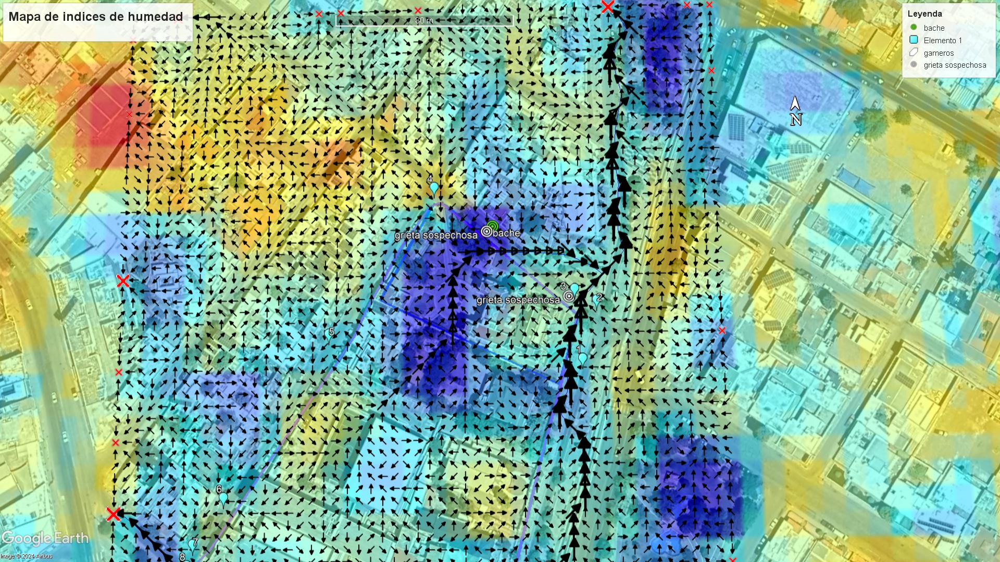

Karla Carrillo
Soy una persona con una gran pasión por las Ciencias de la Tierra, actualmente soy pasante de Ing. Geológica, mis áreas preferidas de esta son la geoquímica, hidrogeoquímica y la geomática. Me gustaría especializarme en la geomática ya que disfruto de realizar proyectos haciendo uso de herramientas como ArcGIS Pro Global Mapper, y ArcMap, decidí tomar los cursos de la plataforma de Alura debido a que me interesa adquirir conocimientos en programación sobre todo en Python ya que he visto que con ayuda de este lenguaje, se pueden personalizar y extender funcionalidades de software como ArcGIS Pro, ádemas de poder automatizar tareas repetitivas y realizar análisis más avanzados con ayuda de librerías como pandas.
